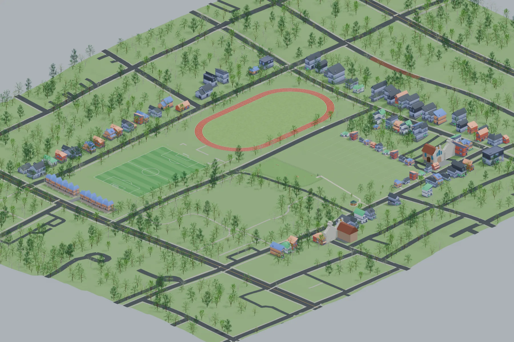
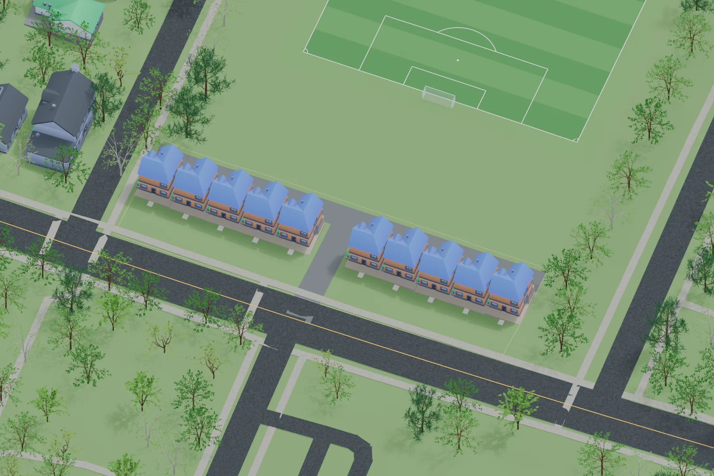
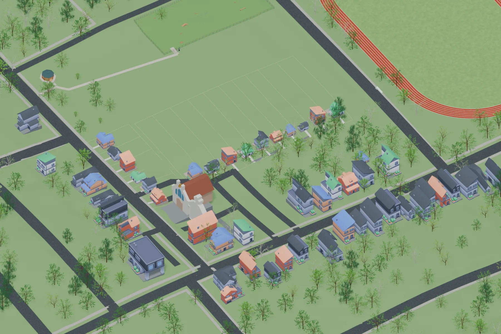

A compromise option
Housing and greenspace
One option is to add housing at Cheney Field and the Martin Street/McGill lot, while retaining the rest of the site as greenspace and parkland.


Cheney Field
Cheney Field has enough room for 9–10 townhomes, with access from either Georgia Avenue or Connally Street. The remainder of Cheney Field would be retained as greenspace and used as soccer fields.


Martin Street/McGill lot
The Martin Street/McGill lot already has defined lots that could be developed with single-family homes. The remainder would be retained as greenspace and could be used for a dog park.


An existing partnership
APS, Atlanta Urban Development, and the City of Atlanta are already working together to turn APS-owned properties into mixed-income housing. That effort could provide a starting point for this approach.